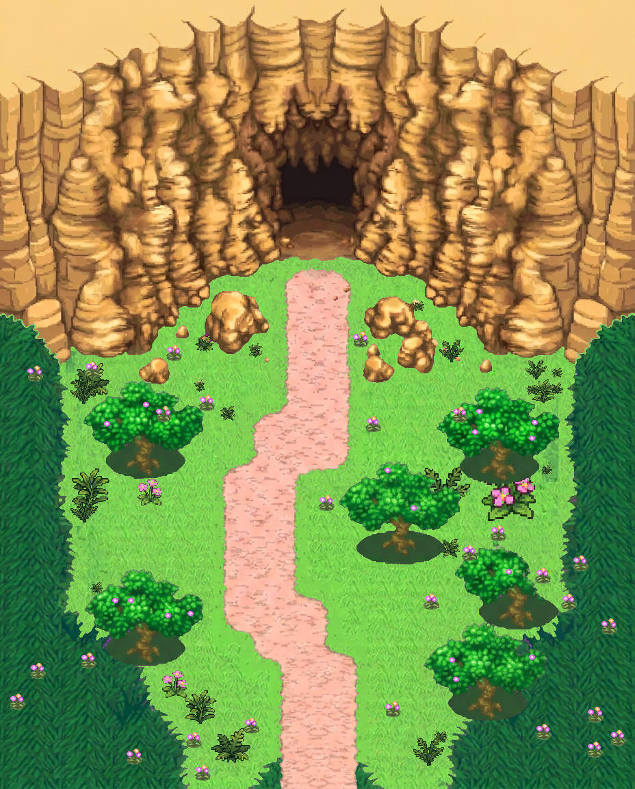
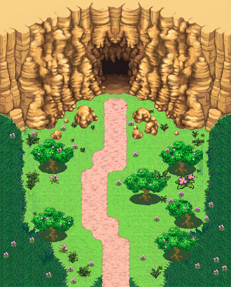
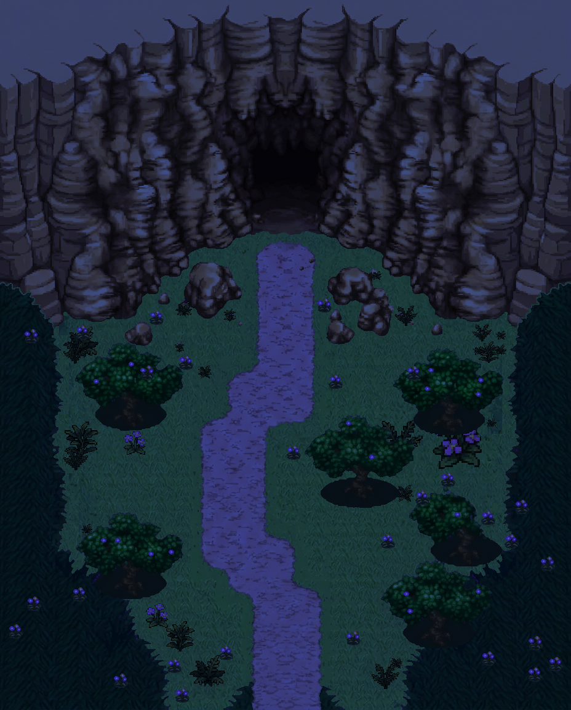

Sprites natifs 24×24, séquence 0,1,0,2, horloges 8/10/14 frames de jeu. Décor 928×1152 V3. Boucle 18667 ms (1120 frames à 60 Hz).
Jour 1× (4 poses sync)

Jour horloges 8/10/14 (0,5×)

Nuit 1×

PNG : COMPOSITION.png + COMPOSITION_pose_00..03 · GIF 0,5× · ORA CrookedEchelleV3_fleurs.ora
Sources : banque_canonique/atlas/Vast_Steppe_Flower_Animations.png, même méthode que source/amp_plains_fleurie_v1.